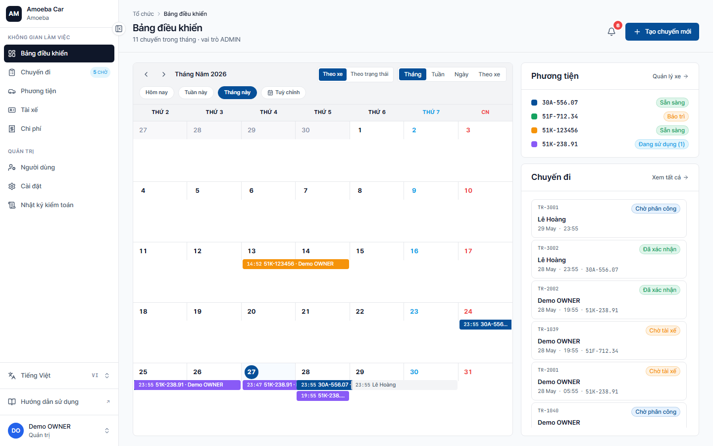
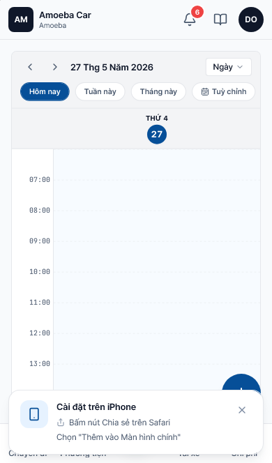

Dashboard — Tổng quan đội xe
- URL
/dashboard— trang chủ tự động khi đăng nhập vai trò Quản lý- Phạm vi dữ liệu
- Chỉ các chuyến của bạn (chuyến do bạn tạo HOẶC bạn là hành khách)


3 khu vực chính
1. Lịch chuyến đi
Hiển thị tất cả chuyến trong tháng thuộc về bạn (do bạn tạo hoặc bạn là hành khách). Có 3 chế độ xem ở thanh trên cùng:
- Theo xe — gom chuyến theo từng biển số
- Theo trạng thái — gom chuyến theo PENDING / CONFIRMED / IN_PROGRESS / COMPLETED
- 4 chế độ thời gian: Tháng / Tuần / Ngày / Theo xe
Bấm vào chuyến trong lịch để mở chi tiết.
2. Danh sách Phương tiện (panel phải trên)
Liệt kê các xe trong đội kèm trạng thái hiện tại (Sẵn sàng / Đang chạy / Bảo trì / Đã thanh lý). Bấm tên xe để xem thông tin chi tiết (xe của tổ chức, đọc-only).
3. Chuyến đi liên quan (panel phải dưới)
Top chuyến gần đây của bạn theo thời gian khởi hành, kèm trạng thái. Bấm "Xem tất cả" để mở trang /trips.
Nút "Tạo chuyến mới"
Nút lớn màu xanh ở góc trên phải dashboard — bấm để mở form đặt xe (xem trang tiếp Đặt xe).
Khác Admin ở điểm gì?
- Phạm vi dữ liệu hẹp — Admin thấy mọi chuyến trong công ty; bạn chỉ thấy chuyến của riêng bạn
- Sidebar ngắn hơn — không có nhóm "Quản trị" (Người dùng / Cài đặt / Nhật ký kiểm toán)
- Số chuyến trên header hiển thị "X chuyến trong tháng · vai trò MANAGER"